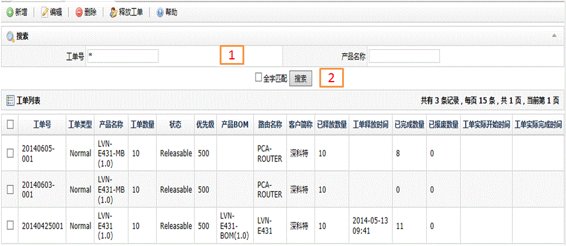
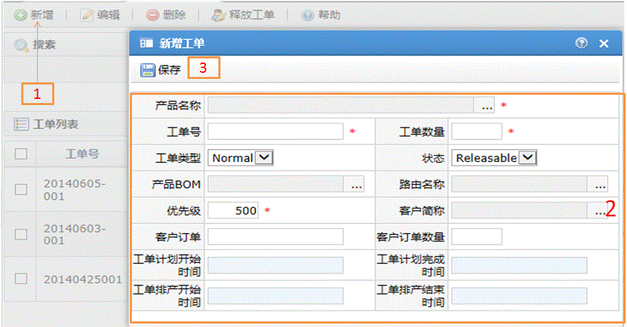
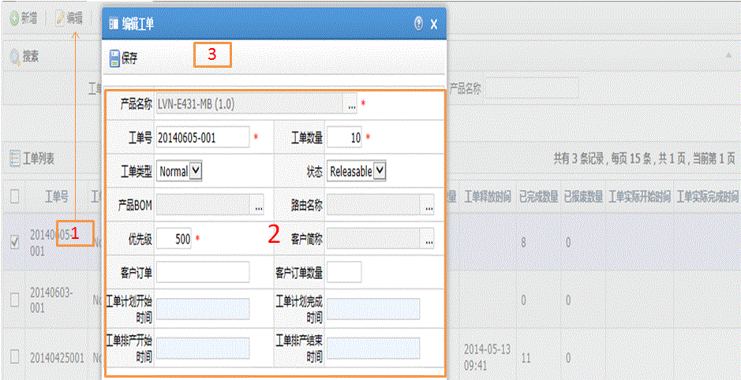
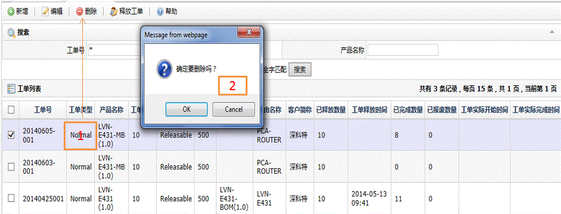

| 字段名 | 描述 |
| 工单号 | 工单编号 |
| 产品名称 | 产品的名称 |
| 工单类型 | Normal：正常生产工单 RMA：返工工单 |
| 工单数量 | 工单的数量 |
| 状态 | Releasable:释放状态，为可用状态； Hold: 暂停状态，为不可用状态； Done：已生产完成状态； Closed：关闭状态； |
| 优先级 | 优先级别 |
| 产品BOM | 工单对应的产品物料清单 |
| 路由 | 工单对应的生产工艺流程 |
| 客户简称 | 客户名称 |
| 已释放数量 | 工单已经释放的数量 |
| 工单释放时间 | 工单第一次释放的时间 |
| 已完成数量 | 工单已经生产完成的数量 |
| 已报废数量 | 工单报废的数量 |
| 工单实际开始时间 | 工单第一次投产的具体时间 |
| 工单实际完成时间 | 工单生产完毕的具体时间 |



